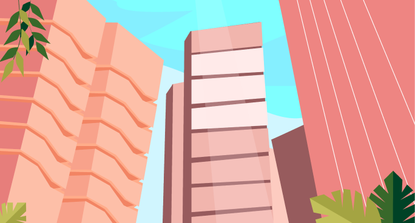

The Dome - 94 d.y.

The Dome is an environment delimited by a dome created by the world government in year 0 after a disproportionate flood left the Earth under water, turning it into an uninhabitable space. The Dome was built to safeguard the human species and allow its development in the best possible conditions and above any other species. There, coexists The Norm, those who were specially chosen to perpetuate the species. However, a series of adjustments were made to survive, such as taking water purifiers in pill form every day to endure the contaminated water. But in addition to purifying, these pills will keep The Norm in a state of constant bliss and insensitivity to externals.